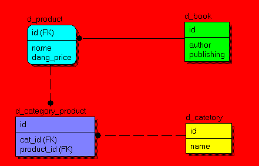

hibernate的性能优化是一个亮点，它的使用粒度很细密，类中的成员属性和属性的属性进行延迟加载。
两种加载方 式的例子如下：首先有4个表，分别为d_product、d_book、d_category、d_category_product，他们分别是产品信息 表、图书信息表、产品类别表，产品类别与产品关系表，他们的关系如图:
从上图中我们可知道3点: 1.d_product与d_book之间的关系为继承关系，d_product记录一些产品的共用信息，而d_book记录的为书产品的个性信息。 2.d_catetory与d_product之间的关系为多对多关系，因为一种产品可能属于多种类型，而一种类别又可能包含多种产品。 3.d_category与d_product的多对多关系是由d_category_product维护的。 针对如上3种关系分别对应hibernate的关系配置如下：
Product.hbm.xml:
<hibernate-mapping package="tarena.db.pojo">
<class name="Product" table="d_product">
<id name="id" type="integer">
<column name="id"></column>
<generator class="native"></generator>
</id>
<property name="name" type="string">
<column name="product_name"></column>
</property>
<property name="price" type="double">
<column name="dang_price"></column>
</property>
<property name="fix_price" type="double">
<column name="fix_price"></column>
</property>
<!-- product到category的多对多 -->
<set name="cats" table="d_category_product" lazy='false'>
<!-- 与当前表关联的外键 -->
<key column="product_id"></key>
<many-to-many class="Category" column="id"></many-to-many>
</set>
<!--Book继承映射-->
<joined-subclass name="Book" table="d_book">
<key column="id"></key>
<property name="author" type="string">
<column name="author"></column>
</property>
<property name="publish" type="string">
<column name="publishing"></column>
</property>
</joined-subclass>
</class>
</hibernate-mapping>
<?xml version="1.0"?>
<!DOCTYPE hibernate-mapping PUBLIC
"-//Hibernate/Hibernate Mapping DTD 3.0//EN"
"http://hibernate.sourceforge.net/hibernate-mapping-3.0.dtd">
<hibernate-mapping package="tarena.db.pojo">
<class name="Category" table="d_category">
<id name="id" type="integer">
<column name="id"></column>
<generator class="native"></generator>
</id>
<property name="name" type="string">
<column name="name"></column>
</property>
<!-- category到product的多对多 -->
<set name="pros" table="d_category_product" lazy='false'>
<!-- 与当前表关联的外键 -->
<key column="cat_id"></key>
<many-to-many class="Product" column="id"></many-to-many>
</set>
</class>
</hibernate-mapping>
我们从上图中可以知道3点信息： 1.图书类继承产品类。 2.产品里包含类别的集合。 3.类别中包含所拥有产品的集合。
这样我们的基本配置就完成了，可以运用hibernate完成orm功能，以让我们用面向对象的思维去对数据库中的表的信息 进行更直观的操作，具体的操作代码就不写了，有兴趣的人可以查看官方文档，里面有详细的说明。下面我们就对这个小例子利用lazy load进行优化，首先我们先来了解什么是lazy load？ Hibernate中的lazy(默认true)网上很多人都把它叫懒加载，主要是告诉Hibernate获取数据时在什么时候去读库， 而且总是比上下文中获取的数据的时间晚一些，数据获取的时间总是在必要的时候才去获取。
在文章中的第一行中我们了解 到lazy的配置主要在两方面一个是在类上，一个是更细粒度在属性上。只要合理的应用这两方面，我们就可以大大的减少 服务端的压力。那我们什么时候该用这个特性呢？下面我模拟几种状况： 1.客户在浏览购买书的网站的时候，只需要知道这个站点买那些种书，那么我们就不需要把类别下的图书信息也传送过去， 我们可以在Category.hbm.xml的第十五行配置改为:
<set name="pros" table="d_category_product" lazy='true'>这样客户看到的类别信息所对应内存中的类别对象的商品集合就没有信息，这样能减少服务端内存的负荷量。 2.客户在浏览类别下的某个图书时候不需要知道书的出版商，那么我们就可以把Product.hbm.xml中的十七行改为:
<property name="fix_price" type="double" lazy='true'>从以上的例子中我们明白了如何对hibernate进行简单的性能优化，但是我们在进行优化的时候应该注意一些问题， 下面就列举一下错误的使用例子：
Category category = (Category)SessionUtil.getSession().get(Category.class, 2);
Set<Product> pros = category.getPros();
SessionUtil.close();
for(Product pro:pros){
System.out.println(pro.getId()+" "+pro.getName()+" "+pro.getPrice());
}
Category category = (Category)SessionUtil.getSession().get(Category.class, 2);
Set<Product> pros = category.getPros();
Hibernate.initialize(pros);
SessionUtil.close();
for(Product pro:pros){
System.out.println(pro.getId()+" "+pro.getName()+" "+pro.getPrice());
}
sf.getCurrentSession().beginTransaction();
chain.doFilter(request, response);
sf.getCurrentSession().getTransaction().commit();
在下一节中我会着重介绍hibernate的抓取策略的优化。